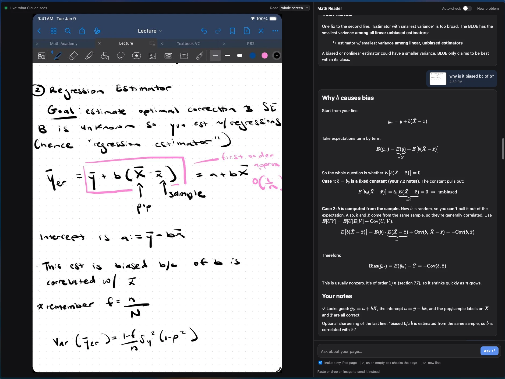

As someone who works full-time and attends school part-time, keeping up with my learning is one of my priorities outside of my busy schedule. Since I couldn't attend office hours (which were during my work hours), I wanted a way to utilize AI as a Socratic tool to enhance my understanding of difficult concepts.
While I was doom scrolling on X and procrastinating my problem set on a Tuesday night, I came across a tweet that instantly got my attention: @noahlt's math set up. It instantly inspired me! I wanted to be resourceful with the tools I already had at hand, so I pulled out my study stack essentials: my iPad, my mac, and a USB-C cord.

If I needed help on a problem I was working through, the way my existing flow worked was clunky and often distracting. I'd be working through the problem, get confused, take a screenshot, upload that screenshot into Claude on my iPad, then re-open Claude on my computer so I could put the output from my query side-by-side with my work. (So much work!) Every question I had meant leaving my notes entirely, letting my brain get side-tracked, and ultimately losing out on the learning entirely.
I got to work on Claude Code and built my own personal math tutor. Rather than going through a whole transfer process, I made it so that any model I wanted to use could see my notes live and reply to me live as I had questions.
Using QuickTime screen capture, I can hook up my iPad to my laptop with a USB-C. The tool reads this screen capture live. The UI is quite simple:
- Left: a live view of my page.
- Right: a chat box for my questions.

Truthfully, I left the inner workings up to Claude Code, however, a neat takeaway I learned from this was the ease of building useful tools instantaneously. I see AI tooling as a means to make difficult things our world has engineered, ever-so-slightly easier and within reach to every person. Technology and engineering is a superpower not every person was privileged to study, so the gift of being able to build tools to enhance your daily workflows is amazing to me! This thread by @noahlt inspired many people, replying with their own setups allowing them to rediscover their childhood love for subjects they never really had the time to carve out to learn independently, without the shame of not knowing simple concepts or the means to find a resource who can answer them on their busy schedules.
I often find myself thinking that this is a fine line to walk. Because we have this affirmative tool in front of us, it is easy to avoid relying on other humans at all. While this tool helped me get through my problem sets, ultimately, the feeling of working and learning alongside other humans is unbeatable. This tool is a good substitute for the nights I'm working late and no TA is around to help, but sitting around the study lounge cramming with my classmates right before a midterm and struggling through difficult problems together is a different gratification than instantly understanding a model's output, tailor-made for your style of learning.